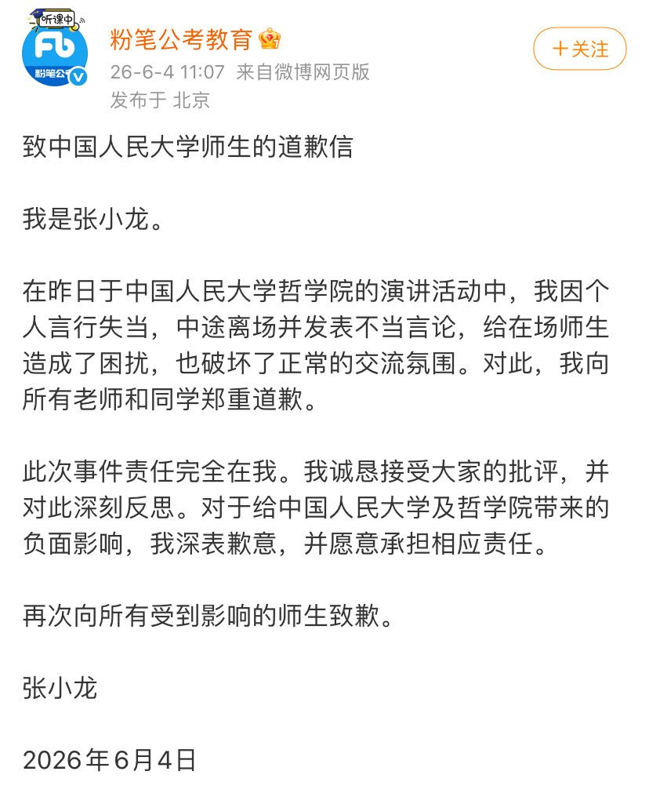
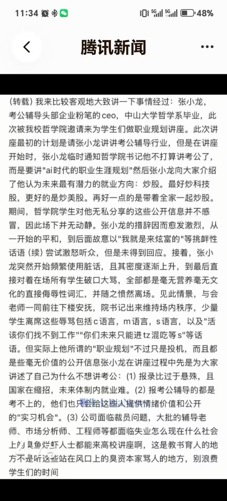

粉笔是什么野鸡公司？😅
之前听都没听过……
另外環状線不认为所谓「带着全家一起炒股」是什么好建议。和炒币一样，如果没有足够的金融知识就盲目炒股的话，那就和「赌博」没有区别。
「考公」这条路虽然已经走烂了，但「盲目炒股」不更坏吗？
而且演讲还不能控制好情绪，这种人是怎么配上讲台的？

之前听都没听过……
另外環状線不认为所谓「带着全家一起炒股」是什么好建议。和炒币一样，如果没有足够的金融知识就盲目炒股的话，那就和「赌博」没有区别。
「考公」这条路虽然已经走烂了，但「盲目炒股」不更坏吗？
而且演讲还不能控制好情绪，这种人是怎么配上讲台的？


张小龙（北京粉笔蓝天科技有限公司的 CEO，致力于在线教育和公职考试培训）于 2026 年 6 月 3 日在哲学院讲 AI 时代和炒股，结果没人理他，辱骂观众愤然离场
像极了在大学毕业典礼上讲 AI 取代人力然后被群起而攻之。人大同学们还是比较有礼貌的，没直接给他嘘下来，太有仁义了 https://t.co/gYhj2Il4KA
像极了在大学毕业典礼上讲 AI 取代人力然后被群起而攻之。人大同学们还是比较有礼貌的，没直接给他嘘下来，太有仁义了 https://t.co/gYhj2Il4KA